AI에게 그림을 맡기면 앱의 감성은 누가 지킬까요?
2024년에 Midjourney와 Runway로 만든 영상으로 한국관광공사 실감관광콘텐츠 공모전에서 우수상을 받았어요. 그 뒤로 그림 안에 이야기를 넣는 쪽으로 왔어요. 이번에는 AI로 뽑은 그림을 앱에 넣으면서, 누구에게 가는 앱인지로 그림의 무게를 정하고, 뽑은 그림을 손질하고, 그 위에 이야기를 붙인 과정을 이야기해 보려고 해요.
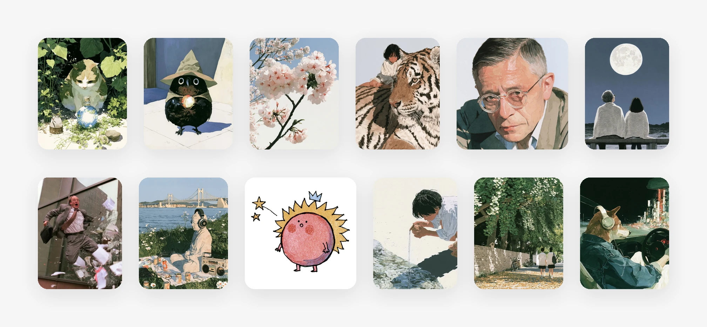
앱에 들어간 그림이에요. 앱이 주는 것이 다르면 그림체도 달라요
같은 「하루 한 번」 앱이라도 여는 사람이 다르면 기대하는 게 달라요. 그래서 앱마다 무드와 스타일과 무게를 바꿨어요.
부적은 밝고 재미있게, 사주와 별자리는 무겁고 감성적으로 갔어요. 퍼즐과 스도쿠는 적당히 진중하게, 햄스터는 웃기게 갔고요.
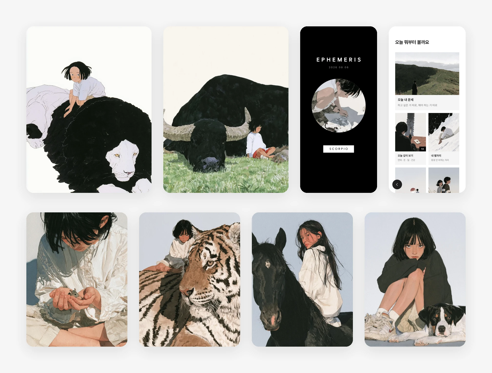
무겁게. 사주와 별자리와 철학
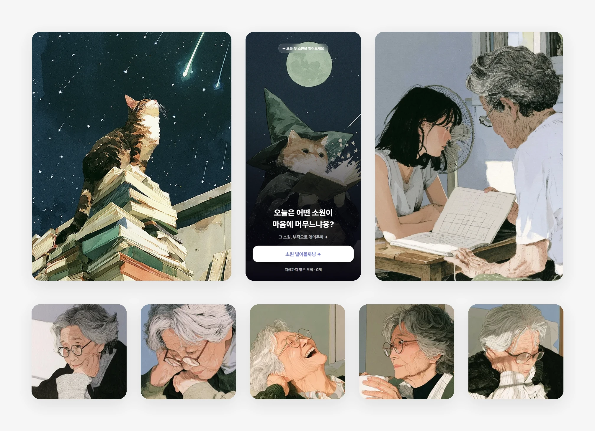
붓 자국. 소원과 할머니
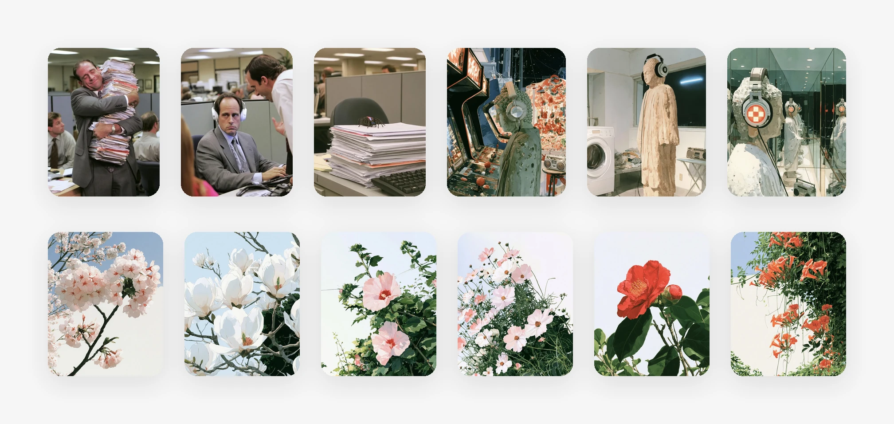
사진처럼. 농담과 꽃. 그림체를 넷으로 가른 기준은 그림에 적었어요
무게를 정한 뒤에도, 뽑은 그림을 그대로 넣지는 않았어요. 앱 안의 자리에 맞게 세 가지를 손봤어요.
첫째, 식물 24종은 256도트로 바꾸는 도구를 만들어 옮겼어요. 둘째, 피어나야 하는 꽃은 꽃잎과 꽃술을 따로 뽑았어요. 그걸 코드로 조립해 움직이게 했죠. 셋째, 종이결 때문에 회색 네모가 남던 캐릭터는 배경을 지워 스티커처럼 만들었어요. 색감도 앱 안의 자리에 맞춰 다시 맞췄고요.
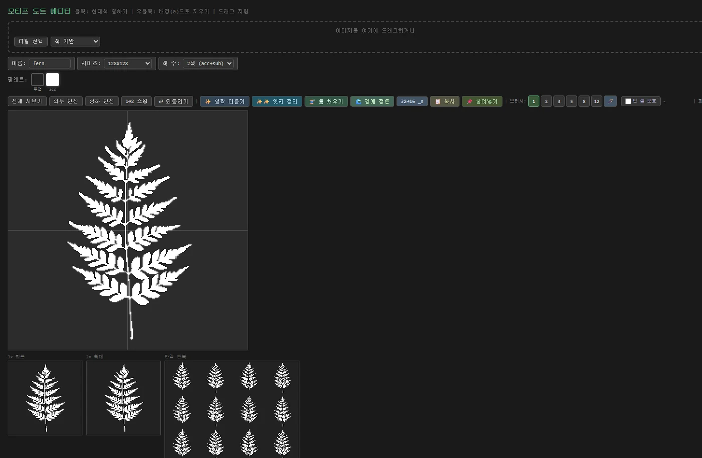
도트로 바꾸는 에디터를 직접 만들어 식물 24종을 옮겼어요. 사진을 끌어다 넣고 바탕·강조·보조 세 색을 찍으면, 격자 위 점으로 바뀌어요
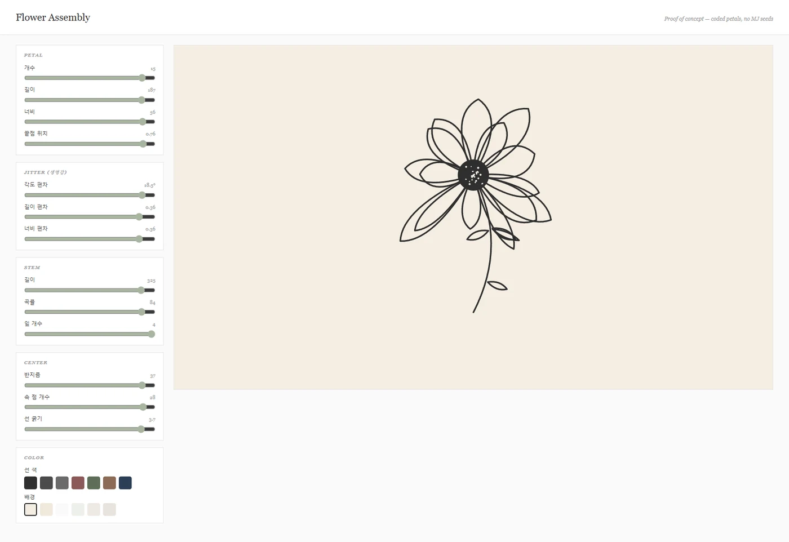
꽃잎과 꽃술을 따로 뽑아 코드로 조립했어요. 꽃잎 수와 길이와 휨을 왼쪽 값으로 돌리면, 오른쪽에서 곧바로 다시 그려져요. 그래야 피어나거든요
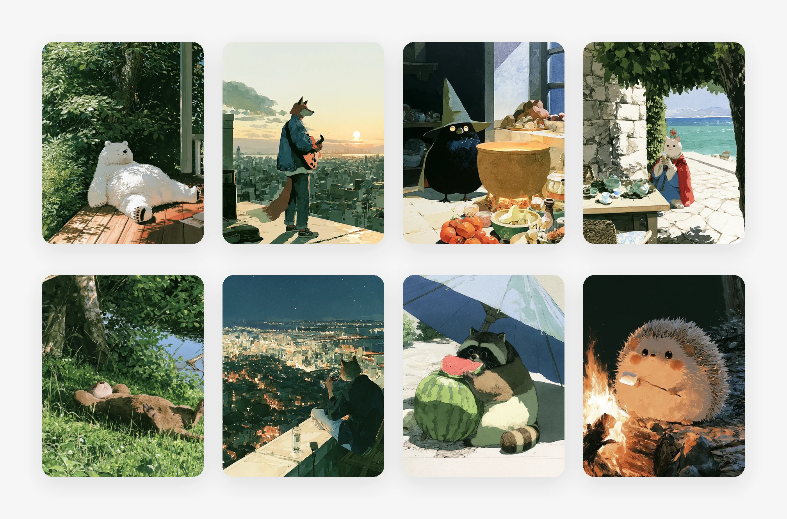
뽑은 그림과 앱에 들어간 판이에요
그림이 장식으로 끝나지 않고, 그 앱에 오는 이유가 되게 하고 싶었어요. 그래서 그림마다 이야기를 붙였어요.
부적은 세계관 47종 가운데서 매일 다른 세계의 부적을 받아요. 할머니와 스도쿠는 한 판을 풀 때마다 할머니 이야기가 한 조각씩 열리고요. 30초 에세이는 글 한 편에 과일 부적 하나가 붙어요.
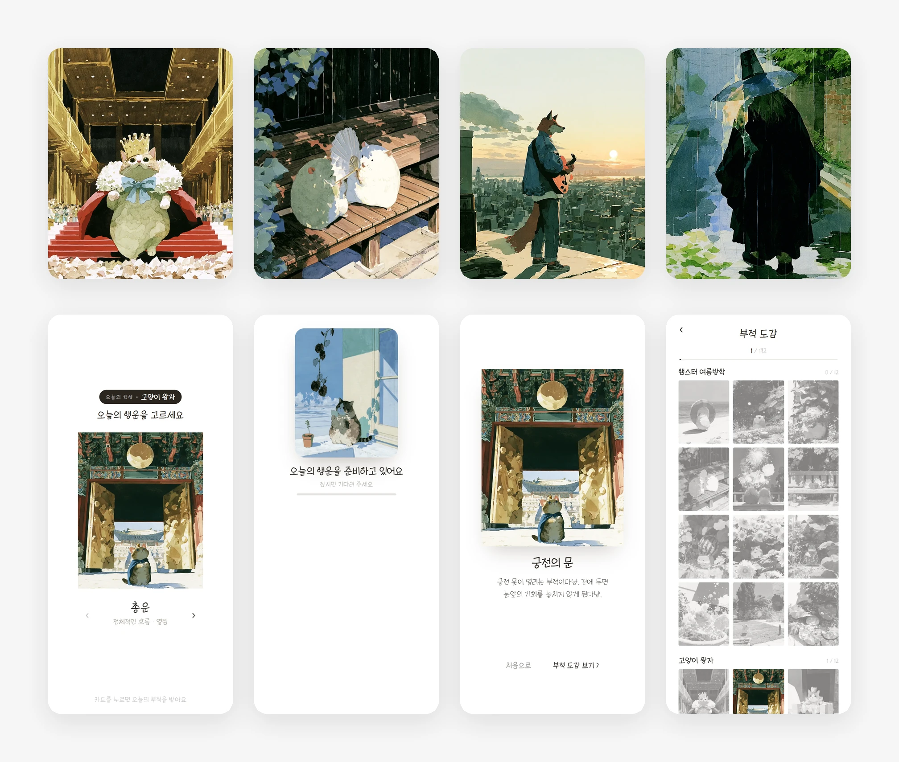
오늘의 부적이에요. 위는 세계관 넷(고양이 왕자, 햄스터 여름방학, 재즈와 여우, 한국의 신비한 존재들), 아래는 받는 순서예요. 세 앱의 세계관은 부적에 적었어요
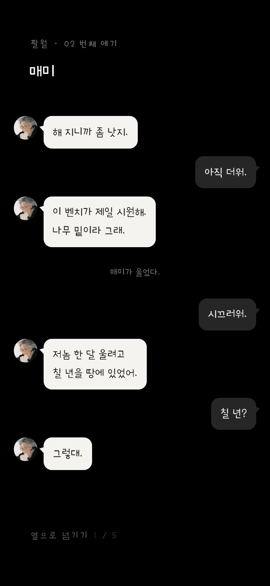
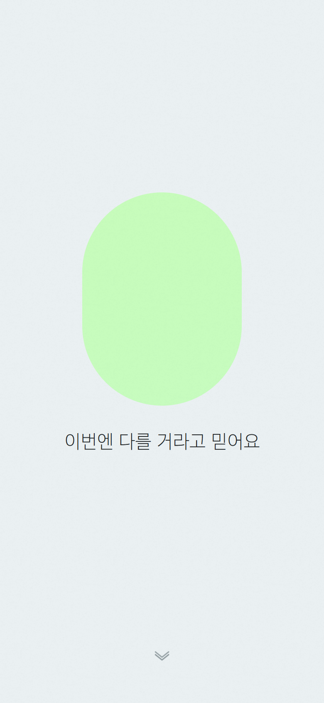
왼쪽은 할머니와 스도쿠에서 한 판을 풀면 열리는 이야기, 오른쪽은 30초 에세이의 과일 부적이에요
이야기를 붙이는 방식은 전에 하던 일에서 왔어요. 게임 회사에서 퀘스트 시스템을 기획했고, 그 전에는 소설을 썼거든요. 그 방식을 미니앱에 그대로 옮겼어요.
낱말에는 남은 횟수를 보여 주는 상태줄을 넣었어요. 부적에는 도감과 매일 도는 컨셉을, 스도쿠 둘에는 한 판을 풀면 열리는 이야기와 옆에서 참견하는 햄스터를 넣었고요. 마음 한컵은 조각을 떨어뜨리면 물리로 쌓이는 컵이에요.
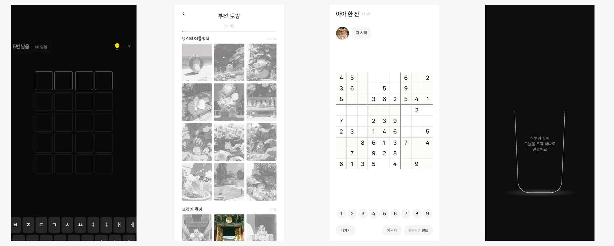
왼쪽부터 낱말의 상태줄, 부적의 도감, 햄스터 스도쿠, 마음 한컵이에요
앱 안에서 통한 그림체는 앱 밖으로도 가져갔어요. 한 스타일이 통하면 다른 곳에도 넓게 써 보고, 그 결과를 계정에서 봐요.
릴스 열두 편 가운데 일곱은 앱에 쓴 그림을 그대로 옮긴 거예요. 인스타그램 카드에도 같은 연작을 썼어요.
앱 그림을 옮겨 만든 릴스예요. 열두 편은 릴스에 모았어요
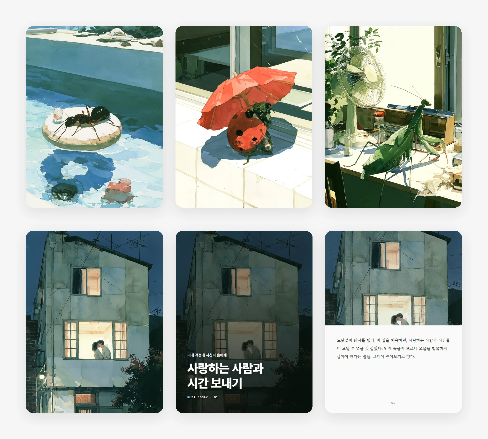
같은 연작을 인스타그램 카드에도 썼어요. 열두 편은 인스타그램 카드에 모았어요
물론 처음부터 맞는 그림이 나오지는 않았어요. 채널 캐릭터가 그랬죠.
강아지 인간, 안경 쓴 청년, 할아버지, 고양이 마술사, 곰, 여우, 진돗개를 거쳐, 앞치마 두른 검은 고양이로 정했어요. 그림체도 낙서와 수채와 플랫과 로파이를 거쳐 흑백 선으로 왔고요.
앱에 넣은 뒤에도 자리에 안 맞으면 다시 뽑아요.
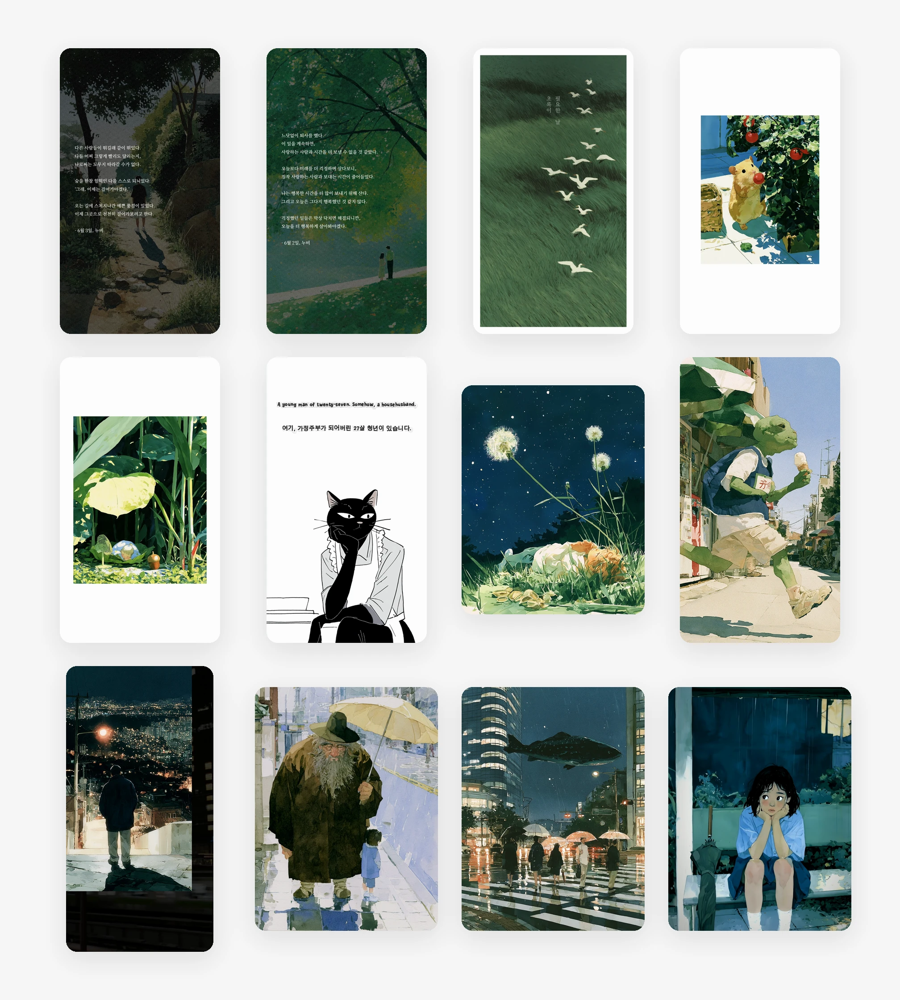
일곱 번 바꾼 끝에 남은 하나예요
9월에는 앱들을 브랜드 셋으로 묶었어요. 글만 있는 쪽, 동화와 종이, 사진과 매트예요.
이때 기준을 하나 세웠어요. 그림을 가려도 3초 안에 셋이 구분돼야 브랜드라고요.
그래서 브랜드마다 화면 구조 하나, 말투 하나, 그림을 놓는 자리 규칙 하나를 정했어요. 앱마다 그림의 무게를 고르던 기준이, 그림 밖으로 넓어진 셈이에요.